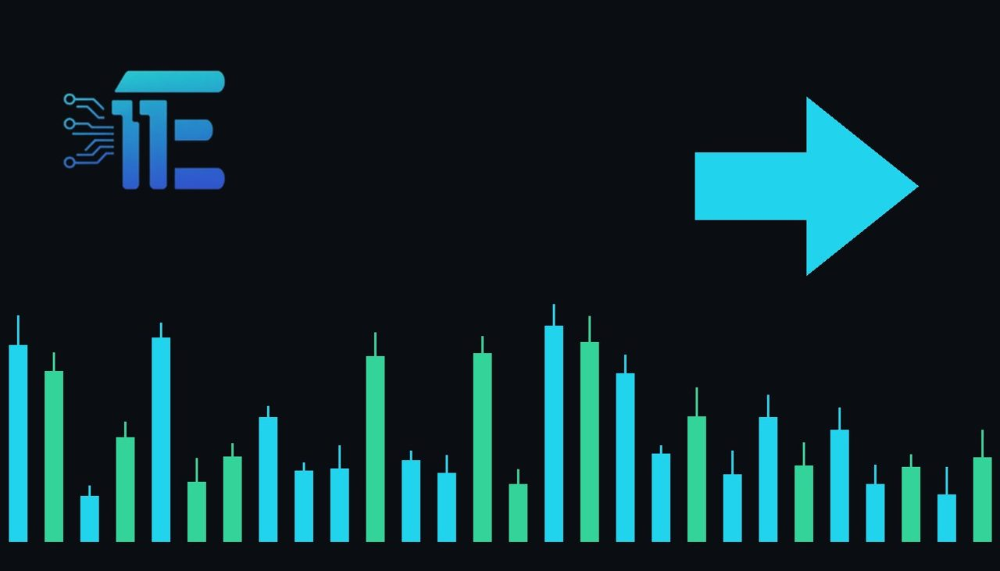

US October CPI Expected to Show 0.3% Headline Increaseរបាយការណ៍ CPI ខែតុលារបស់អាមេរិកត្រូវបានរំពឹងថានឹងកើនឡើង 0.3%
XAU/USD impact: ◆ Mixedផលប៉ះពាល់លើ XAU/USD: ◆ ចម្រុះ

Forecasts anticipate the upcoming October CPI report to reveal a 0.3% headline increase alongside a 0.2% core gain. The projected inflation trajectory directly impacts Federal Reserve rate expectations and gold sentiment.
ការព្យាករណ៍រំពឹងថារបាយការណ៍ CPI ខែតុលានឹងបង្ហាញការកើនឡើង 0.3% លើទិន្នន័យទូទៅ និង 0.2% លើទិន្នន័យស្នូល។ តួលេខអតិផរណានេះមានឥទ្ធិពលផ្ទាល់លើការរំពឹងទុកអត្រាការប្រាក់របស់ Fed និងតម្លៃមាស។
Financial markets are looking ahead to Tuesday for the release of the United States Consumer Price Index report covering October. Consensus projections anticipate the headline CPI reading to rise by 0.3% on a monthly basis, while the core reading, which excludes volatile items, is forecast to advance by 0.2%.
ទីផ្សារហិរញ្ញវត្ថុកំពុងរង់ចាំយ៉ាងអន្ទះសាចំពោះការចេញផ្សាយរបាយការណ៍សន្ទស្សន៍ថ្លៃទំនិញប្រើប្រាស់ CPI ប្រចាំខែតុលារបស់សហរដ្ឋអាមេរិកនៅថ្ងៃអង្គារខាងមុខនេះ។ ការព្យាករណ៍ជាទូទៅរំពឹងថាទិន្នន័យ CPI ទូទៅនឹងកើនឡើង 0.3% ប្រចាំខែ ខណៈដែលទិន្នន័យស្នូល core CPI ត្រូវបានព្យាករថានឹងកើនឡើង 0.2%។
These inflation estimates serve as a pivotal guide for the pricing of XAU/USD across global exchanges. Inflation metrics are closely monitored by the Federal Reserve to evaluate the momentum of price pressures across the domestic economy. The resulting monetary policy stance dictates real bond yields and the relative valuation of the US dollar, both of which serve as primary drivers for bullion.
ការប៉ាន់ស្មានអតិផរណាទាំងនេះដើរតួជាការចង្អុលបង្ហាញដ៏សំខាន់សម្រាប់តម្លៃ XAU/USD នៅលើទីផ្សារសកល។ ទិន្នន័យអតិផរណាត្រូវបានតាមដានយ៉ាងដិតដល់ដោយ Fed ដើម្បីវាយតម្លៃសម្ពាធថ្លៃទំនិញនៅក្នុងសេដ្ឋកិច្ច។ គោលនយោបាយរូបិយវត្ថុជាលទ្ធផលនឹងកំណត់ទិសដៅទិន្នផលសញ្ញាប័ណ្ណ និងតម្លៃដុល្លារអាមេរិក ដែលកត្តាទាំងពីរនេះជាកម្លាំងចលករចម្បងសម្រាប់តម្លៃមាស។
A stronger-than-projected inflation reading on Tuesday could signal enduring cost pressures, potentially prompting policymakers to maintain restrictive borrowing costs for a longer duration. Under such circumstances, elevated interest rates and a firmer USD would typically apply downward pressure on non-yielding assets such as gold.
ប្រសិនបើតួលេខអតិផរណានៅថ្ងៃអង្គារចេញមកខ្ពស់ជាងការព្យាករណ៍ នោះវាអាចបង្ហាញពីសម្ពាធថ្លៃទំនិញដែលនៅតែបន្តមាន ហើយអាចជំរុញឱ្យធនាគារកណ្តាលរក្សាអត្រាការប្រាក់កម្រិតខ្ពស់ក្នុងរយៈពេលយូរ។ ក្នុងស្ថានភាពបែបនេះ អត្រាការប្រាក់ខ្ពស់ និងការឡើងថ្លៃនៃ USD ជាទូទៅនឹងដាក់សម្ពាធធ្លាក់ចុះលើទ្រព្យសកម្មដែលមិនផ្តល់ការប្រាក់ដូចជាមាស។
Conversely, if the actual consumer price data prints lower than the forecast 0.3% headline and 0.2% core rates, concerns regarding persistent inflation could diminish. A softer inflation outcome generally weakens the US dollar and reduces nominal yields, creating conditions that historically lend support to gold valuations.
ផ្ទុយទៅវិញ ប្រសិនបើទិន្នន័យជាក់ស្តែងបង្ហាញតួលេខទាបជាងការព្យាករណ៍ 0.3% លើទិន្នន័យទូទៅ និង 0.2% លើទិន្នន័យស្នូល ក្តីបារម្ភអំពីអតិផរណាអាចនឹងថយចុះ។ លទ្ធផលអតិផរណាដែលធ្លាក់ចុះជាធម្មតានឹងធ្វើឱ្យដុល្លារអាមេរិកចុះខ្សោយ និងកាត់បន្ថយទិន្នផលសញ្ញាប័ណ្ណ ដែលជាកត្តាគាំទ្រដល់តម្លៃមាស។
Ahead of Tuesday's official publication, market participants are keeping a close watch on the gap between headline price shifts and core inflation measures. Any notable deviations from consensus projections are poised to introduce fresh volatility across the USD, interest rate curves, and bullion trading.
មុនពេលរបាយការណ៍ផ្លូវការត្រូវបានចេញផ្សាយនៅថ្ងៃអង្គារ អ្នកជួញដូរកំពុងតាមដានយ៉ាងយកចិត្តទុកដាក់លើគម្លាតរវាងទិន្នន័យទូទៅ និងទិន្នន័យស្នូល។ គម្លាតណាមួយពីការព្យាករណ៍អាចនឹងបង្កឱ្យមានការប្រែប្រួលថ្មីៗនៅលើទីផ្សារ USD អត្រាការប្រាក់ និងការជួញដូរមាស។
Key takeawaysចំណុចសំខាន់ៗ
- October CPI headline inflation is forecast to rise 0.3%, with core projected at 0.2%.
- អតិផរណា CPI ទូទៅប្រចាំខែតុលាត្រូវបានព្យាករថានឹងកើនឡើង 0.3% ខណៈ CPI ស្នូលរំពឹងថានឹងកើន 0.2%។
- Consumer price data will heavily influence Federal Reserve interest rate policy and USD direction.
- ទិន្នន័យថ្លៃទំនិញប្រើប្រាស់នឹងជះឥទ្ធិពលយ៉ាងខ្លាំងលើគោលនយោបាយអត្រាការប្រាក់របស់ Fed និងទិសដៅ USD។
- Higher inflation figures tend to weigh on gold, whereas cooler readings typically offer price support.
- តួលេខអតិផរណាខ្ពស់តែងតែដាក់សម្ពាធលើតម្លៃមាស រីឯតួលេខទាបជួយគាំទ្រដល់ទីផ្សារមាស។
Original commentary by THE MARKET CODE, based on public reporting from Economy. Written with the help of AI. Educational only, not financial advice.
មតិវិភាគដើមដោយ THE MARKET CODE ផ្អែកលើការរាយការណ៍សាធារណៈពី Economy។ សរសេរដោយមានជំនួយពី AI។ មាតិកាអប់រំប៉ុណ្ណោះ មិនមែនជាដំបូន្មានហិរញ្ញវត្ថុទេ។